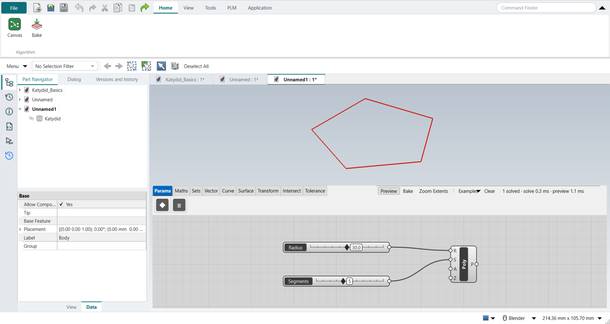
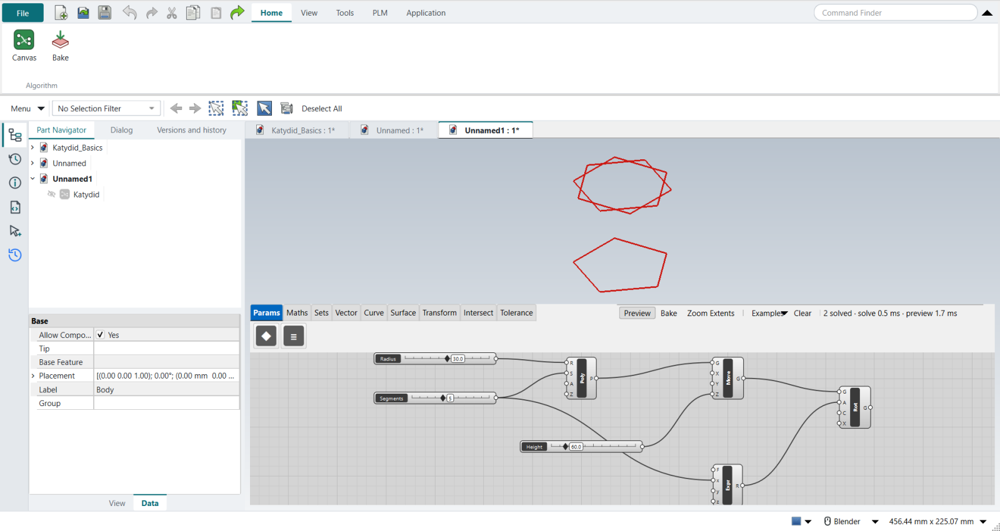
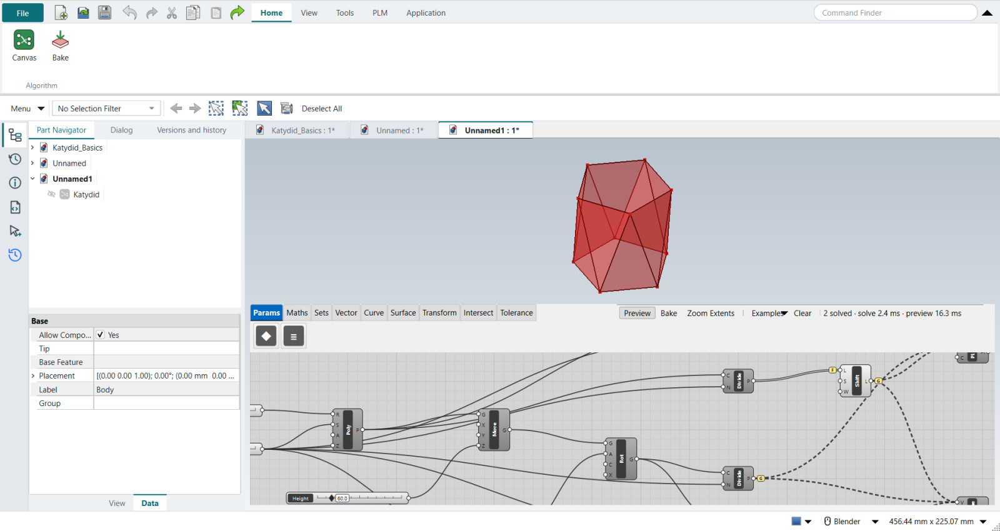
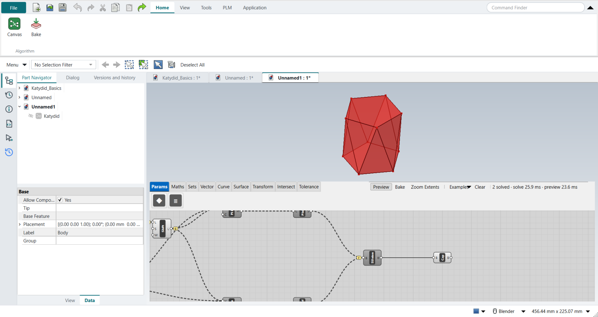
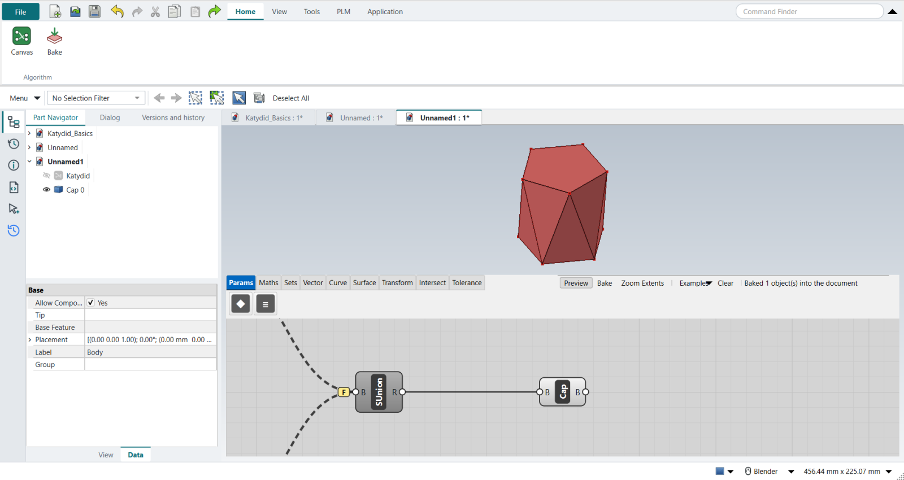
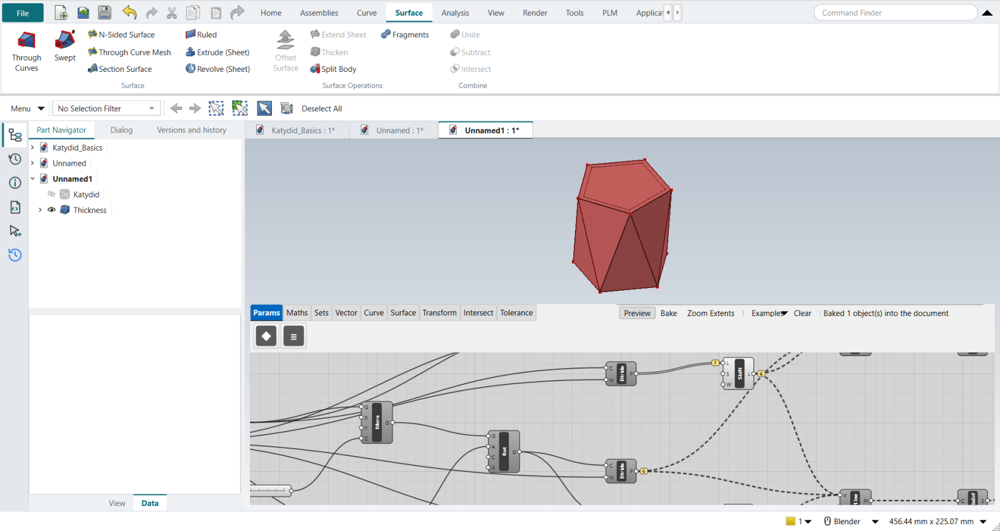

Tutorial Q: Faceted planter
| Video |
Rhino Grasshopper Tutorial (Beginner) (YouTube, channel Rhino Grasshopper) |
| Application |
Algorithmic Modeling (Katydid), then Modeling for the shell |
| You learn |
Rotating by a formula, lists and data trees (Shift, Graft, Flatten), facets from points, joining faces into a solid, a shell |
| Sizes |
Millimetres: a pentagon of radius 30, 60 high, walls 3 thick |
For the facets to be triangles, each top corner must sit over the middle of a base edge. The angle between corners is 360°/N, so the top polygon turns by half of it: 36° for a pentagon.
Step by step
1. The base polygon
Regular Polygon with a Radius slider (10 to 50, here 30) and a Segments slider (3 to 8, here 5).

2. The top polygon
Move it up by a Height slider (60) and Rotate it by an Expression 360/x/2, with the Segments slider as x.
The video uses two Division components and a Unit Z vector; Katydid’s Move takes the height directly, and Rotate works in degrees.

3. Corners and their neighbours
The video Explodes both polygons and trims the repeated closing vertex with Shortest List. Katydid’s Divide Curve into Segments gives the corners without the repeat, so no Shortest List is needed.
Shift List by 1 gives each corner’s neighbour. Then come the data trees:
-
Graft the corner lists (right-click an output › Graft): each corner gets its own branch, so the next component builds one facet per corner.
-
Flatten Shift List’s input first: Shift List adds a level to the path, and without the Flatten its branches would not line up with the others.
4. The facets
The video uses Extrude Point (an edge drawn to a point). Here a closed Polyline through three corners does the same, then Planar Surface:
-
lower facets: base corner, next base corner, top corner;
-
upper facets: top corner, next top corner, next base corner.
The shifted lists keep the facets from twisting: ten triangles.

5. A closed solid
The video caps the openings with Boundary Surfaces and joins everything with Brep Join. Here Solid Union, its input Flattened, joins the ten facets into one shell, and Cap Holes closes the top and the bottom: a valid solid of 12 faces and 138,495.8 mm³, exactly what FreeCAD’s Part API gives for the same faces.

6. Bake and shell
The video’s Option A bakes the solid and runs Rhino’s Shell. Here the same happens with FreeCAD:
-
Select Cap Holes and click Home › Algorithm › Bake.
-
Ctrl+M (Modeling), click the top face of the baked solid.
-
Surface › Surface Operations › Thicken (FreeCAD’s Part Thickness), type
-3 mm, tick Intersection, MB2.
| Without Intersection, FreeCAD 1.1.4 returns this faceted solid unchanged. With it, the planter is hollow and open at the top, its outside unchanged. |
The video’s Option B, Pufferfish’s parametric Shell Polysurface, has no Katydid component yet.


The replay
| # | In the book (NX) | In FreeCAD NX-Style | Result | Notes |
|---|---|---|---|---|
Q1 |
Open Grasshopper |
Ctrl+N + Application > Algorithmic Modeling |
same |
an empty canvas on the new part |
Q2 |
Polygon on the XY plane; sliders for Radius (10-50) and Segments (3-8) |
Regular Polygon with 'Radius' 30 and 'Segments' 5 |
same |
5 edges, corners 30.000 mm from the centre |
Q3 |
Move it up by Unit Z x height; Rotate 3D by 360 / N / 2 degrees (two Divisions) |
Move with 'Height' in Z; Rotate with A = Expression 360/x/2 (x = Segments); Katydid’s Rotate takes degrees |
differs |
top polygon at z = 60.0, first corner at 36.0 degrees (360 / 5 / 2 = 36): each top corner sits over the middle of a base edge |
Q4 |
Explode both polygons; Shortest List drops the repeated closing vertex; Shift List by 1 |
stand-in for Explode: Divide Curve into Segments (corners, without the repeated closing one, so no Shortest List is needed); Shift List with its input Flattened; the lists for the facets Grafted, one corner per branch |
missing |
corners per list {'bv': 5, 'tv': 5, 'bs': 5, 'ts': 5}. Katydid has no Explode or Shortest List yet (asked for) |
Q5 |
Extrude Point: each base edge to a top corner, then each top edge to the shifted base corner |
stand-in for Extrude Point: a closed Polyline through each branch’s three corners (base, next base, top / top, next top, next base), then Planar Surface |
missing |
10 triangular facets, 10628 mm^2; Shift List keeps them from twisting. Katydid has no Extrude Point yet (asked for) |
Q6 |
Boundary Surfaces for the top and bottom caps; everything Flattened into Brep Join: a closed solid |
Solid Union with its input Flattened joins the ten facets into one shell; Cap Holes closes the top and bottom |
differs |
valid solid, 12 faces, 138495.8 mm^3 (the same faces made directly with FreeCAD’s Part API: 138495.8). Cap Holes makes both caps, so no separate Boundary Surfaces are needed |
Q7 |
Bake the solid |
select Cap Holes + ribbon 'Home › Algorithm > Bake' |
same |
Cap 0, 138495.8 mm^3 |
Q8 |
Shell: Rhino’s Shell command, the top face picked, thickness 5 (or Pufferfish’s Shell Polysurface) |
the top face selected + ribbon 'Surface › Surface Operations > Thicken' (FreeCAD’s Part Thickness), '-3 mm' typed, Intersection ticked, MB2 = OK |
differs |
hollow planter 35097.5 mm^3 of 138495.8, outside unchanged True, 23 faces; value -3.0 mm. Option B (Pufferfish’s parametric Shell) has no Katydid component yet |
| Result | Means |
|---|---|
same |
The book’s NX steps work as written. |
differs |
It works, but the FreeCAD way is different; the notes say how. |
limit |
The book’s way fails in FreeCAD itself; a workaround follows in the next steps. |
missing |
FreeCAD has no such function; a stand-in follows. |
skipped |
Not replayed; the notes give the reason. |
FAILED |
Did not work. |